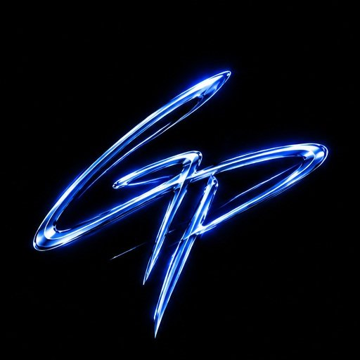

AI creative campaigns
One clear vision across concepts, campaign imagery and motion.

GPBUILDSIndependent AI creative studio
Premium visuals for brands with a point of view. AI imagery, cinematic video and ultra realistic UGC. Imagined with intention. Made to be felt.
Let’s create togetherCreative direction by George Povemba
01 / The studio
GPBUILDS is my independent creative practice. I bring creative direction and AI-powered production together to make images and films with a distinct point of view.
From the first concept to the final frame, every choice serves your brand: the mood, the light, the movement and the story.
Full creative control, without the overhead of a traditional production.
One clear vision across concepts, campaign imagery and motion.
Natural delivery and believable detail. Creator style content for everyday moments.
Cinematic brand films, social content and visual storytelling.
Fashion, product and lifestyle imagery. Considered from every angle.
02 / Start a conversation
Have a vision? Let’s bring it into focus.
georgepovemba@gmail.com+1 914 215 2245